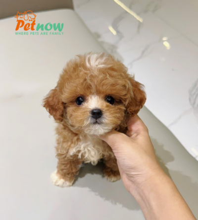

Giá: 2.000.000đ
Chó săn vịt là một hậu duệ của các giống chó French Water Dog, Barbet và Hungarian Water Hound
Mua ngayChó săn vịt là một giống chó săn dùng để săn các loại thủy cầm trong đó chủ yếu là vịt. Ngày nay giống chó này được lai tạo để trở thành dòng chó cảnh. Tên "Poodle" của chúng xuất phát từ chữ "Pudel" trong tiếng Đức, nghĩa là "thợ lặn" hay là "chó lội nước" và bộ lông của chúng có thể đè bẹp cơ thể khi ở trong nước.
2.000.000đ
1.000.000đ
9.000.000đ
9.000.000đ